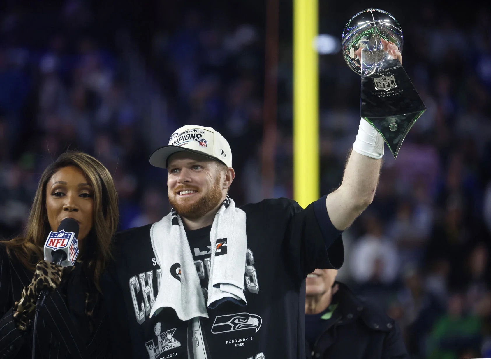

Having played for five times in eight NFL seasons, most would think Sam Darnold's resumé reflects that of a second-string journeyman. But despite his rough start, Darnold battled for every chance he got. Now, he's the latest Super Bowl champion quarterback.
Facing a disruptive Patriots secondary, Darnold completed 19 passes for 202 yards and threw one passing touchdown. While his stats didn't jump off the page, Darnold took care of the ball, managed the clock well, and only surrendered one sack.

Darnold celebrates after securing his first Super Bowl victory.